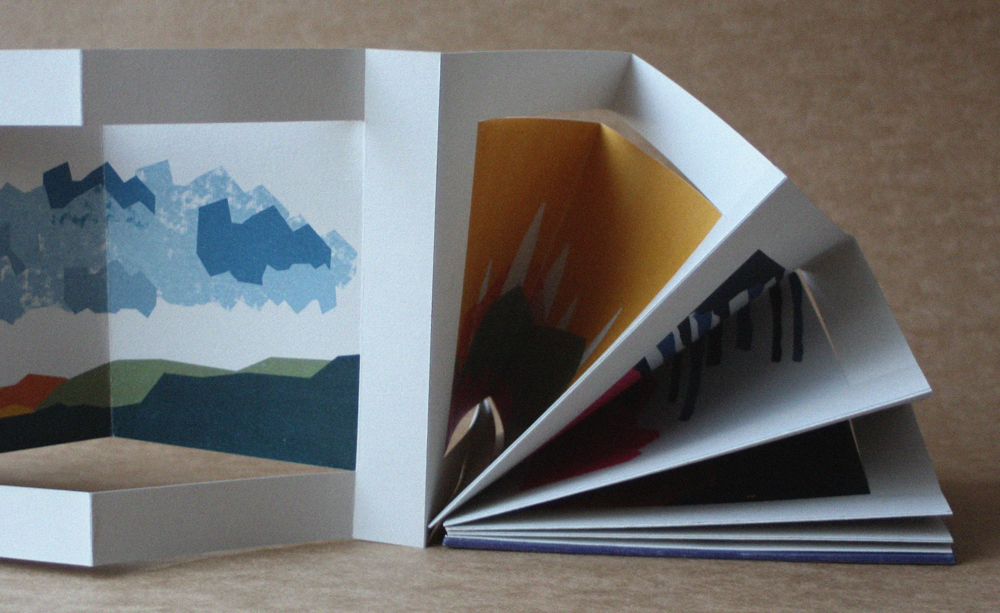
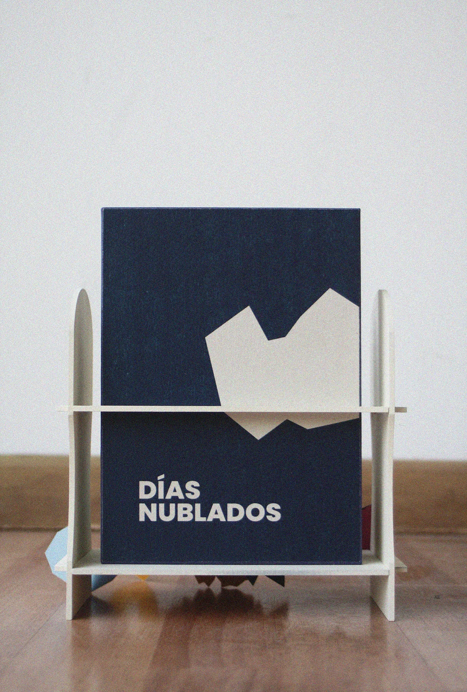
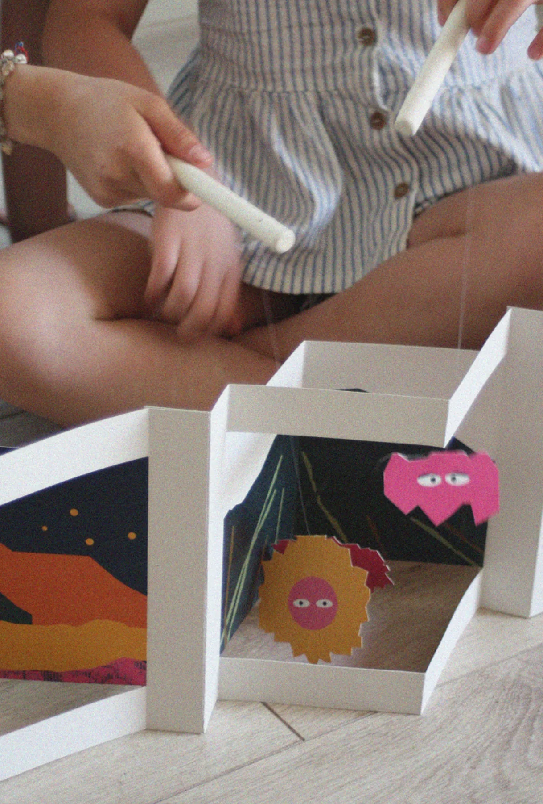
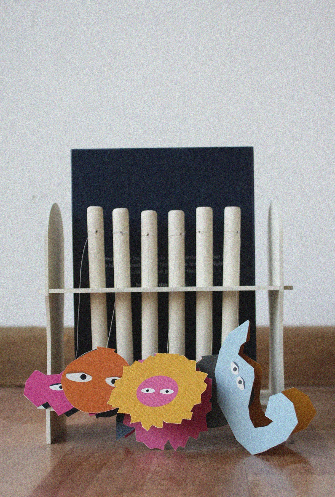
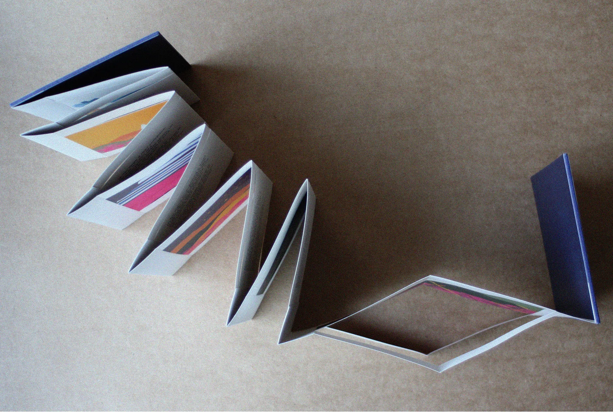
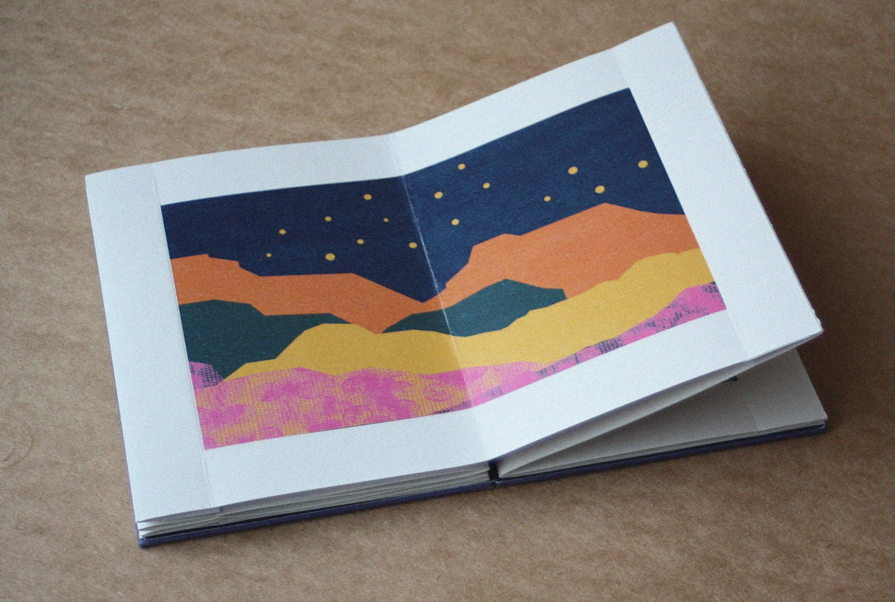

Días Nublados
A theatrical book where children become the protagonists of Nube's story.
2024
Taller VI (Innovation), Diseño UC
Escrito con Tiza
3 designers
Horizontal teamwork across every stage of the project

Nube, a cloud that cannot cry
We started from improvisation and divergent thinking in early childhood, and from what theatre brings to children's development. Días Nublados is an editorial device for children aged 4 to 8 that goes beyond the book. Its characters and sets turn reading into a performance that changes with every use, as Nube moves through different days, discovers her emotions and finds her place in the world.





Observation of how children play and learn, the benefits of theatre in early childhood, and tests of the book with children
Among the best proposals of Taller VI. Submitted to Chile's National Fund for Books and Reading, 2025 call.
Testing with children taught me to design for what they invent, not for what I expected them to do.